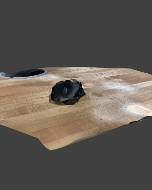
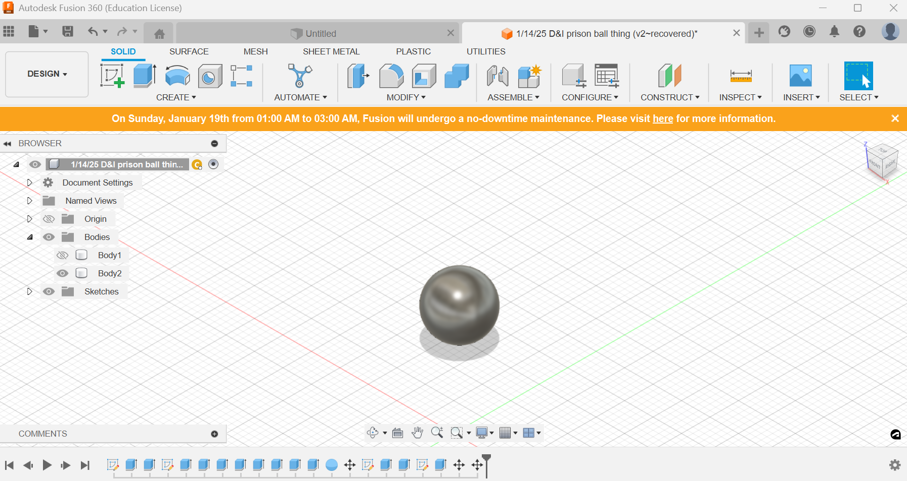
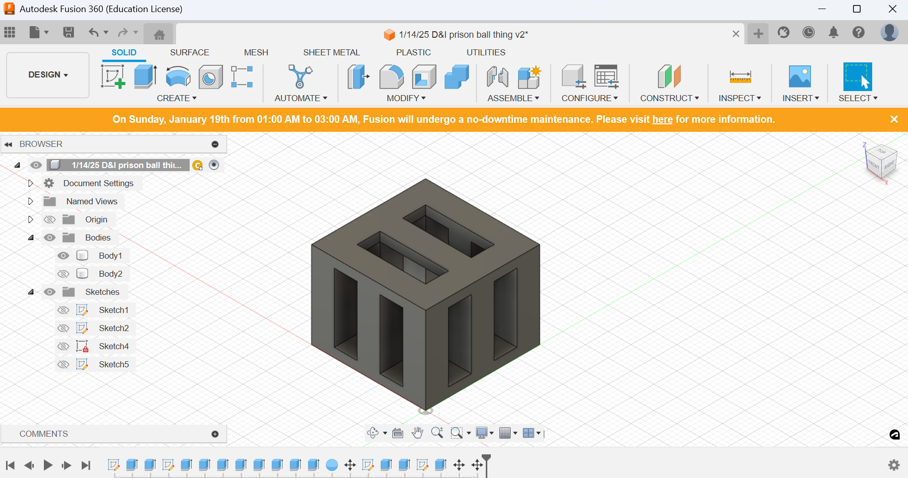

3D Scanning
I started by downloading the scaniverse app on my phone and I was planning on scanning my headphones but realied I couldn't because it can't stand up. I ended up settling for scanning a mouse and tried getting every possible angle.
3D Modeling
In this section I created a ball that would be held inside of a box which would be similar to some stress toys and the dog toy with a ball in it.
This is the final design of my 3d print which was printed, but is currently missing. I tried recreating a stress toy in my own manner by having a ball inside surrouded by a jail like structure.